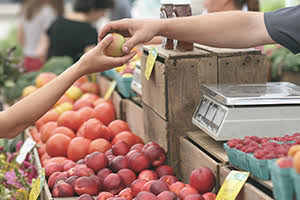

Top 5 Healthy And Cheapest Food Items You Can Live On

Ever thought of cutting your food costs, cause the bill of your food consumption scares you every time you see it?
There could be different set of reasons that could vary from person to person who are
looking to cut their food costs.
You could be going through your struggling days, might be saving money for some specific
reason, or even just wanting to experience life on your own with less money.
Whatever the reason is but the motive should not be just to find the cheapest food but also
nutritious as well. It is vital to give equal importance to the nutrition a food provides you
with and not alone the price.
After all, at a very basic level, the purpose of eating food is to give taste to the tongue and
maximum amount of energy to the body.
No matter what the reason is, the below mentioned food items will surely provide you
with not only the most needed nutrition levels that your body require at a maximum
possible cheapest price but also the taste that your tongue craves.
These are the items that are easy and quickest to make and you don’t have to know cooking
to make these.
Here’s the list of top 5 cheapest and nutritious food items that are easily available near you.
1. Potato
Cost per potato(150g) = 2rs – 4rs
Calories per potato = 100
You can eat potato either by boiling it in oven or on flame. It takes less than a
min to boil a single potato.
Tip- Boiled potato tastes good when is eaten with ketchup.
Trivia- Matt Damon in the movie “The Martian” survives by eating potatoes.
2. Eggs
Cost per egg(50g) = 4rs - 5rs
Calories per egg =78
Eggs have always been one of the cheapest and highly protein rich
item and everyone should eat it because it helps you completing the
calorie quota efficiently, rapidly and they don’t even come under
non- veg category.
3. Soya chunks
Calories per cup = 420
Soya chunks/badi can be eaten either by boiling or roasting.
It depends upon an individual how he likes it. Soya chunks can be
easily find in the general (kirana) stores near you.
4. Oats
Calories per cup = 389
Oats have now become popular because of the western people
eating it now but people in India were consuming it from a long
while due to the daily usage of cereals in one meal at least.
They can be consumed with milk and also by boiling in water.
5. Dalia
Calories per cup = 342
Dalia is very much similar to oats when it comes to making it but the
calories, taste and price differ by a little.
Conclusion
The target should always be to consume at least
2000 calories a day
and therefore you can sort the food items with the relevant quantity
and schedule it according to your daily routine of consumption. If it is
3 times a day, then break it down in such a way that you cover 2000
calories or otherwise you can also do intermittent eating under
which you can break every single diet into two.
Although
intermittent eating is normally done by athletic people as they
require more calories.
Above list does not contain fruit items.